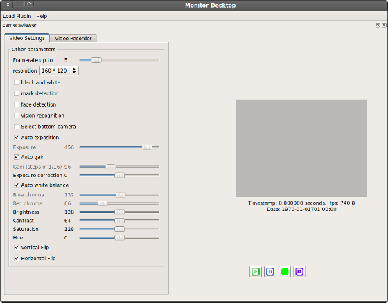
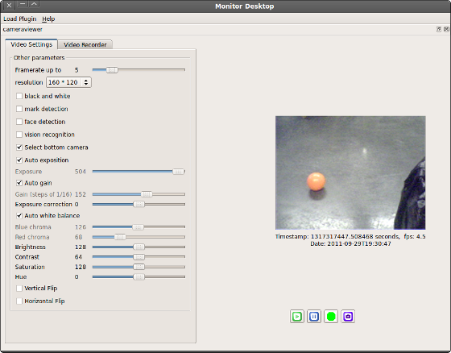

Camera Viewer Tutorial¶
See also
Let’s consider this use case: you are writing a module that makes your robot find the position of the ball on the football field. Unfortunately, something seems to go wrong when the robot tries to visually locate some marks around it.
You can use Monitor’s camera viewer to see through the robot’s eyes. You can also configure the camera settings from there (brightness, contrast...), and finally understand why everything seems to go wrong.
| Step | Action |
|---|---|
Launch Monitor and start the Camera Viewer plugin. For further details, see the How to launch a Monitor plugin section. The camera viewer plugin widget connects the robot and appears.  |
|
To start viewing what the robot sees, click the Play
Seeing that, you understand that the ball, which is at your robot’s feet, cannot be seen that easily with the top camera. Using the bottom camera instead would definitely help! |
|
Click the Select bottom camera to switch between cameras. Finally, you diagnosed your little camera issue, and you are back on track for real robot programming! |
 button.
button.